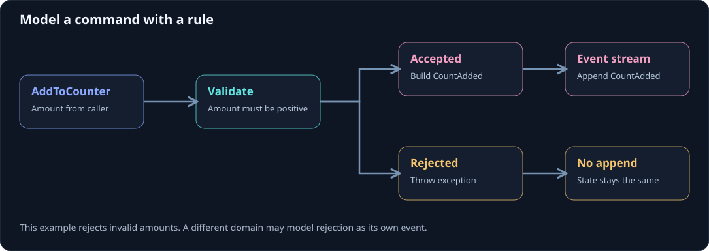

Model a command and a rule
Start with a sentence from the domain: “Add a positive amount to this counter.” This gives you a command (AddToCounter), one validation rule (amount greater than zero), and an event (CountAdded) for the accepted result. A rejected request throws and writes no event in this example.
On this page

Express the decision in C
This example uses the current Troolio.Core 10.0.6 actor API. Put the code in a .NET 10 project with Troolio.Core and Microsoft.Orleans.Sdk references.
using Microsoft.Extensions.Configuration;
using Orleans;
using Troolio.Core;
using Troolio.Stores;
public interface IValidatedCounterActor : IActor { }
[GenerateSerializer]
public record AddToCounter(Metadata Headers, int Amount)
: Command<IValidatedCounterActor>(Headers);
[GenerateSerializer]
public record CountAdded(Metadata Headers, int Amount) : Event(Headers);
[GenerateSerializer]
public record GetValidatedCount : Query<IValidatedCounterActor, int>;
public sealed class ValidatedCounterActor(IStore store, IConfiguration configuration)
: EventSourcedActor(store, configuration), IValidatedCounterActor
{
private int count;
public IEnumerable<Event> Handle(AddToCounter command)
{
if (command.Amount <= 0)
throw new ArgumentOutOfRangeException(nameof(command.Amount));
return [new CountAdded(command.Headers, command.Amount)];
}
public void On(CountAdded @event) => count += @event.Amount;
public int Handle(GetValidatedCount _) => count;
}
The command handler checks a business rule before producing an event. On only changes in-memory state; the configured store keeps the event history. During replay, applying the same CountAdded events reconstructs the same count.
Extend the model
A larger feature may produce several events or involve another actor. Name events in the past tense, keep the payload sufficient to replay state, and decide explicitly whether a rejection is an exception or a recorded domain event. Test both branches and a replay of historical events before changing event formats.
Continue with first actor, events and state, then projections.